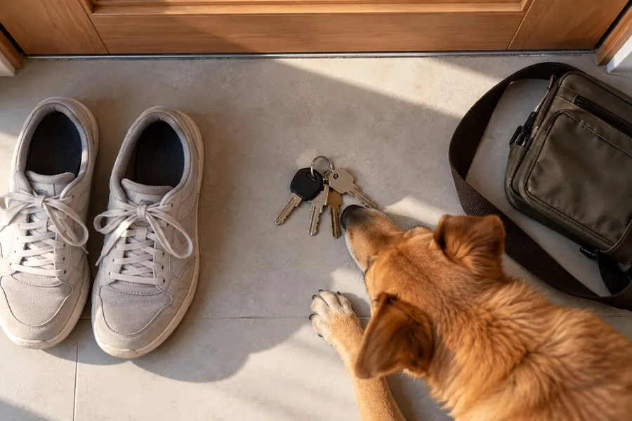
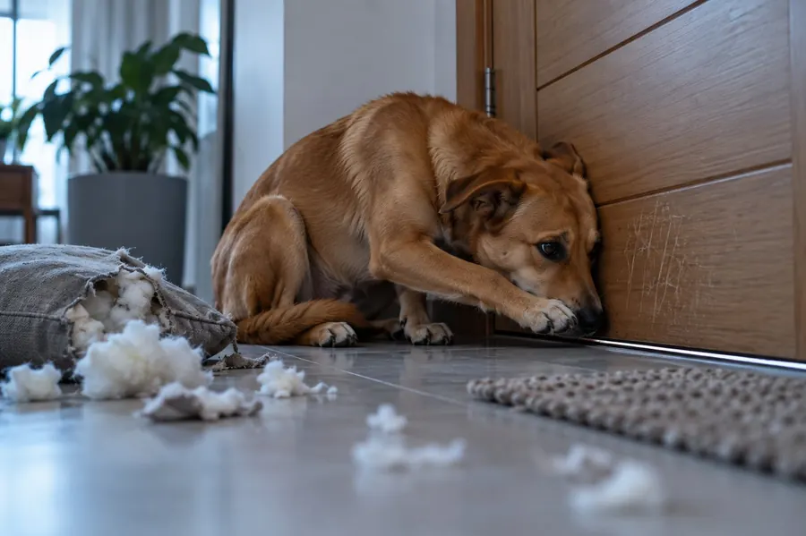
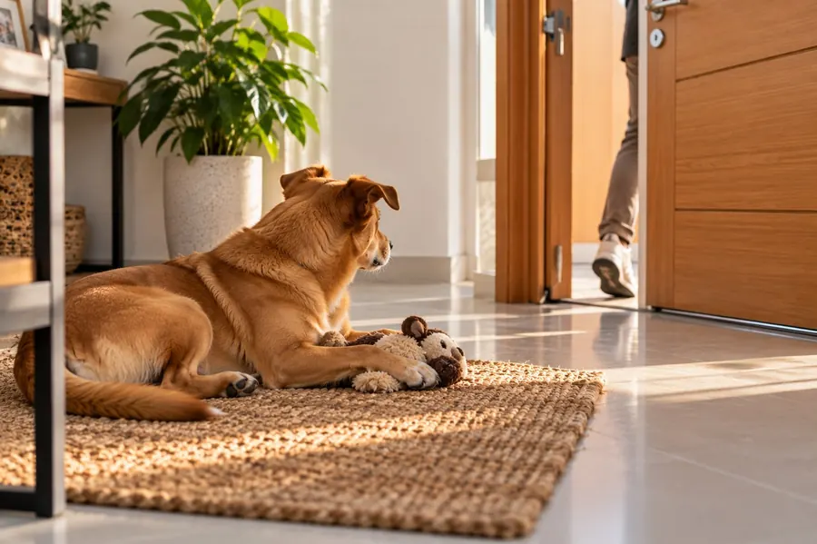
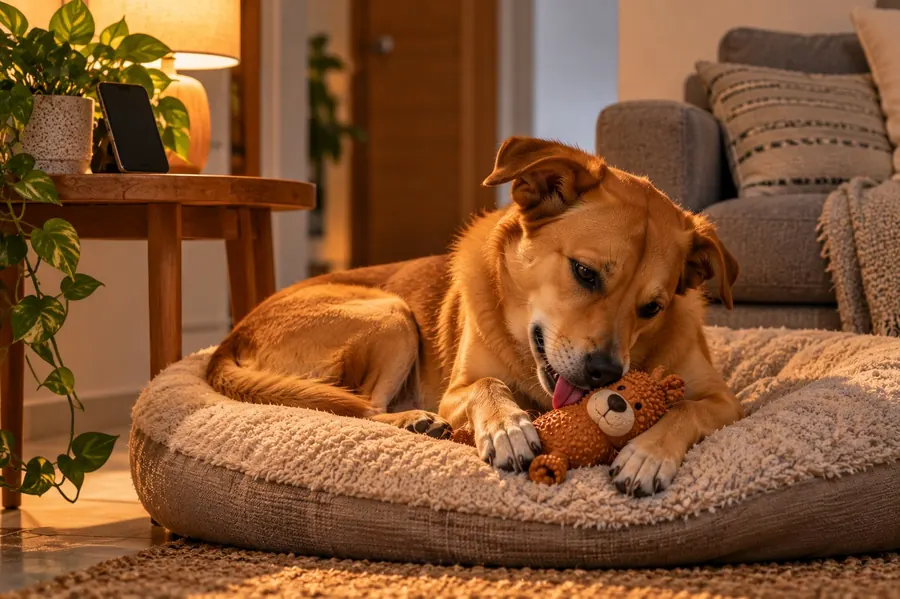
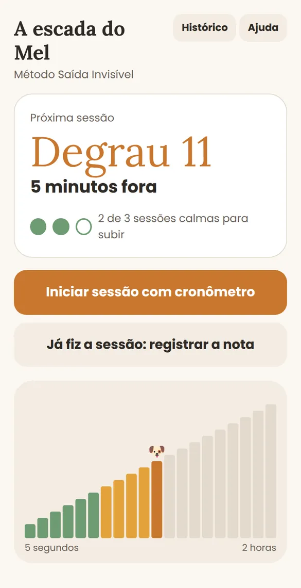
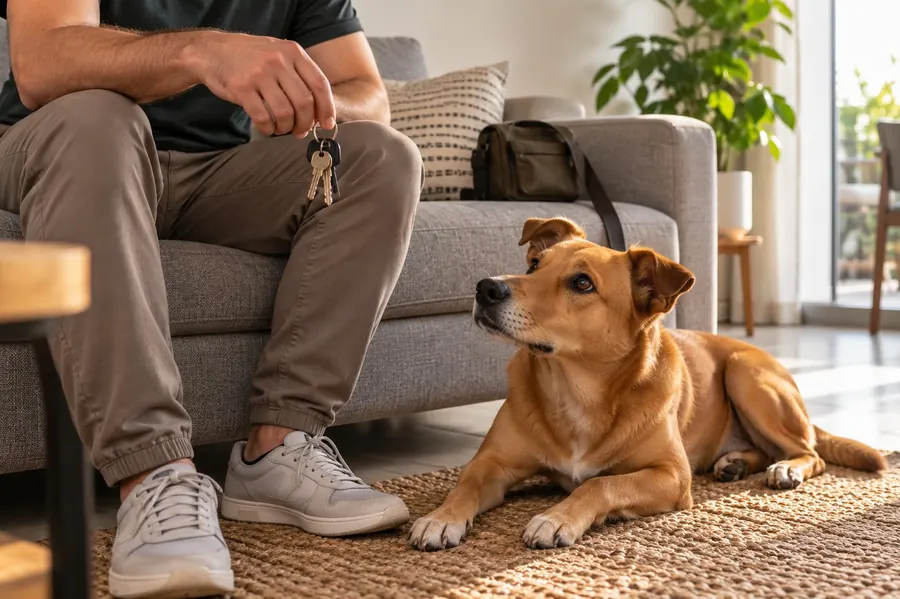
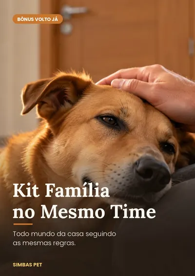
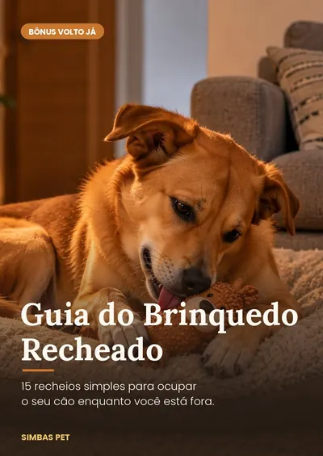
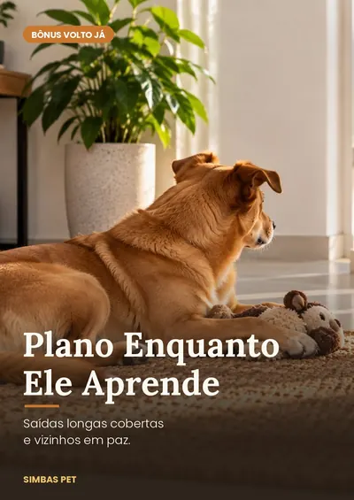
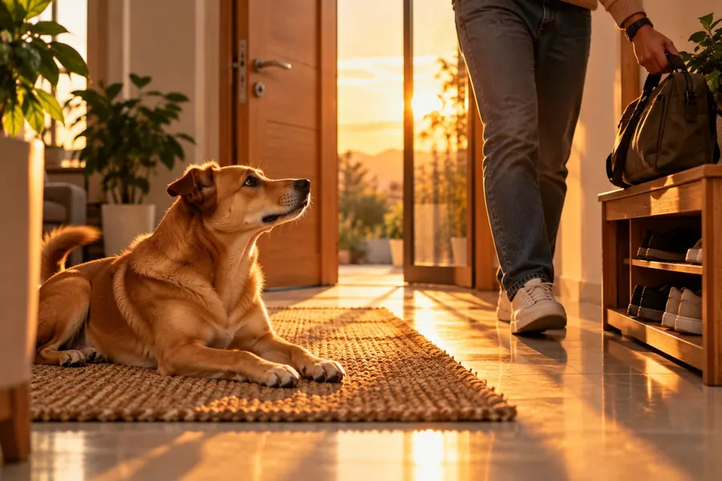

1
A chave perde o poder
Você usa os sinais de saída várias vezes por dia sem sair. Em poucos dias, a chave volta a ser só uma chave.

Toque em tudo o que você reconhece. O termômetro mostra o que isso significa.
O pânico de ficar sozinho tem três peças: os sinais de saída, o tempo de ausência e o ritual de sair e voltar. Veja quantas cada tentativa resolve.
Tira o silêncio da casa, mas a chave continua anunciando que ele vai ficar sozinho.
Ele percebe a sua falta do mesmo jeito, e passa a vigiar você ainda mais.
Quando o pânico já começou, ele nem olha para o brinquedo.
Ele liga a bronca à sua chegada, não ao que fez horas antes. O medo aumenta.
A falta que ele sente é de você. Muitas vezes a casa fica com dois cães ansiosos.
Você não estragou o seu cão. Ninguém te mostrou as três peças juntas.
O pânico não começa quando a porta fecha. Começa antes, e se alimenta de três coisas. O Volto Já trabalha as três ao mesmo tempo.

Você usa os sinais de saída várias vezes por dia sem sair. Em poucos dias, a chave volta a ser só uma chave.

Ausências tão curtas que ele nem percebe, subindo um degrau por vez: de 5 segundos até 2 horas.

Um jeito de sair e de voltar que ele aprende a prever. Com áudio próprio e brinquedo recheado.
Toque nos degraus. O treino começa em segundos e termina em horas, sempre no ritmo do seu cão.
3 sessões calmas e ele sobe um degrau. Ficou preocupado? Desce um. Entrou em pânico? Desce dois. Sem adivinhação.

O aplicativo que vem no Volto Já: cronômetro que avisa a hora de voltar e o próximo degrau em um toque.

O guia começa pelo Teste da Chave: 15 minutos, sem sair de casa. Você pega a chave, senta no sofá e anota a reação dele cinco vezes. Se a nota cair até a quinta tentativa, você já viu o primeiro sinal de que o método combina com o seu cão.
Acesso na hora, pelo e-mail da compra.
54 páginas com fotos e infográficos: o Teste da Chave, as três camadas, os 7 erros que atrasam o treino, o plano da primeira semana e o que fazer quando o progresso trava.
Aplicativo no celular com cronômetro, versão para imprimir e colar na geladeira, e planilha com gráfico de progresso. Você escolhe o seu jeito.
O guia do ritual narrado e a trilha de piano em versões de 30 minutos e de 1 hora, para tocar enquanto você está fora.

O acordo da casa, a mensagem pronta para o grupo da família e cartões para colar na porta. Todo mundo fazendo igual.

15 recheios simples em três níveis, com a lista do que nunca pode entrar. Para ocupar os primeiros minutos sozinho.

Como cobrir as saídas longas durante o treino, com mensagem para o chefe, para o vizinho, para o síndico e um bilhete pronto para o elevador.
pessoas acompanham a Simba's Pet no Instagram, no Facebook e no TikTok.
O cachorro que chora quando o tutor sai, o vizinho que reclama, a casa revirada na volta: essa é a dor que mais aparece nas mensagens dos nossos seguidores. O Volto Já organiza os protocolos de dessensibilização gradual, usados por especialistas em comportamento canino, num passo a passo que qualquer tutor aplica em casa.
Nossa missão: que nenhum tutor precise sair de casa com o coração apertado.
Cada cão tem um ritmo. Alguns avançam rápido nos primeiros degraus; outros levam mais tempo. Chegar a ausências longas pode levar algumas semanas ou alguns meses. O Volto Já não promete prazo: ele mostra, em números no aplicativo, se o seu cão está subindo a escada.
Sim. As sessões levam poucos minutos e podem ser feitas antes ou depois do trabalho. O bônus Plano Enquanto Ele Aprende mostra como cobrir as saídas longas durante o treino, para elas não desfazerem o progresso.
Serve para cães de qualquer idade e porte. Em filhotes, o método ajuda a evitar que o problema se instale. Em cães idosos, se houver desorientação ou mudança no sono, o guia orienta a passar primeiro pelo veterinário.
Não. Você usa um celular antigo como câmera (com uma videochamada) e, se quiser, um brinquedo recheável de borracha. O resto já está no Volto Já.
Não necessariamente. O guia tem um teste para separar ansiedade de separação de tédio, reatividade a sons e fase de filhote, e diz o que fazer em cada caso.
Não. O método trabalha comportamento e rotina. O guia mostra os sinais que pedem uma consulta antes de começar ou durante o treino.
Logo depois do pagamento, você recebe no e-mail o acesso ao guia em PDF, ao aplicativo, à versão para imprimir, à planilha, aos áudios e aos três bônus. Tudo funciona no celular.
Você tem 30 dias de garantia incondicional. Se sentir que não valeu, pede o reembolso e recebe 100% do valor de volta, sem perguntas.

Só precisa ensinar a ele, um degrau de cada vez, que você sempre volta.
Quero o Volto Já por R$ 27Pix ou cartão, acesso imediato e garantia total de 30 dias.